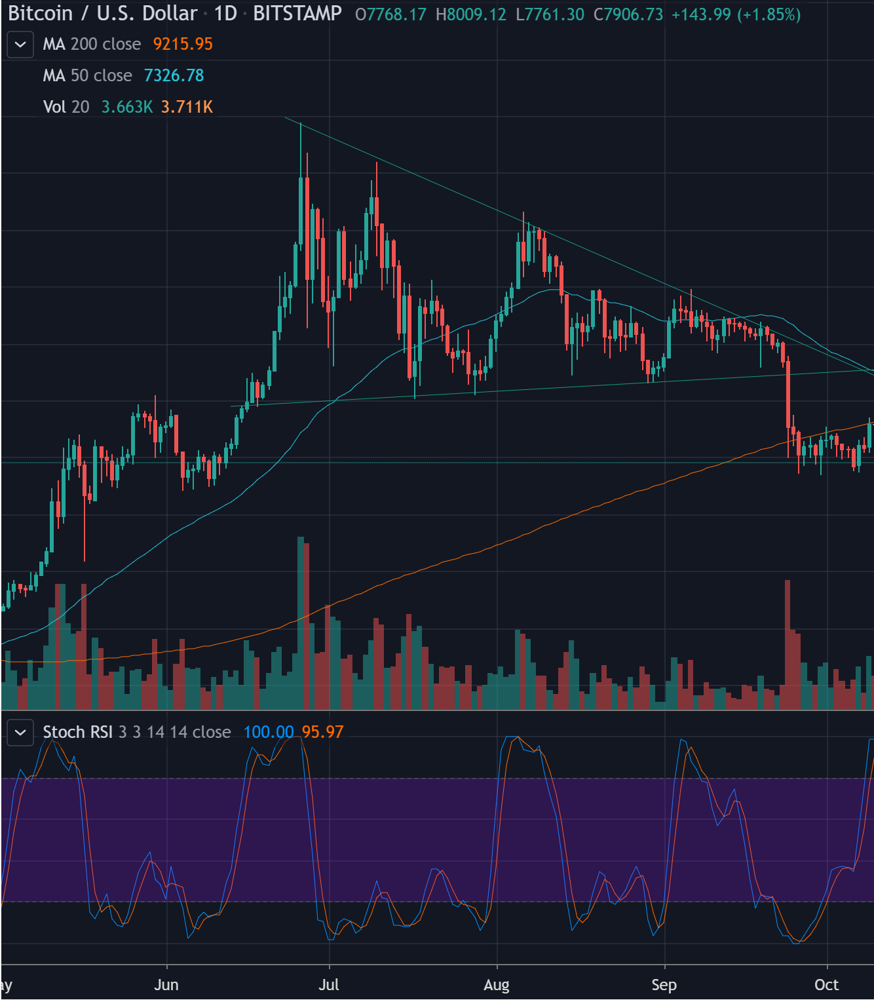
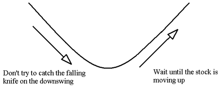

Looking at the charts!
When buying bitcoin for trading purposes, its best to do alot of research before diving right in. Bitcoin is a very volatile market and the price of a satoshi can fluxuate quite fast, so its always important that you are looking at the charts at any patterns forming.
When trading you must always be on the lookout on any fluxuating price. But when you have to factor in the volume of crypto being sold and the ratio between highs and lows in price it will be very difficult without a candle chart. uk.tradingview.com offers some of the best charts for trading and will most likely be your best friend when trading crypto. If you would like an example of this please head to our Chart page.
Bull/Bare Flags:
As you can see from the image above a bull flag is where a strong uptrend pattern is emerging and it kinda looks like a flag and pole. This is vise versa with a bare flag but it is on a downtrend. By creating a line from the all the lowest lows candles and forming a line with the highest high candles you can create a sort of triangle that the candles will sit in. Right off the bat you will be able to tell the flow of the next few candles. As new candles are created the flow will be more constricted as it reaches the the inner angle. At this point there is a chance that there might be a breakout to either the upside or downside. When this happens the trendline is then broken and a new one is formed. There is also a chance that it is a false breakout but these do not occur often.
Dont catch falling knives
This is something that alot of traders might experiance when they are starting out but it is very valuable to learn quick. When the price of of bitcoin drops 10% from its current price in a downtrend its not always the best idea to start buying more. This is because you do not know where the bottom of the downtrend is until you experiance a uptrend. It imposrtant to remember that you cannot see the future and you wont be able to buy at its very lowest nor sell at its highest point. Its allways best to ride the uptrend not the downtrend.